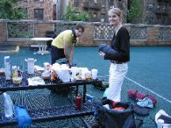

Checking the equipment
Comparing knives
|
Checking the equipment |
Comparing knives |

|
|
|
The planning of the trip started around February or March 2004, when we ordered the official planning kit to hiking the Grand Canyon. Later, we bought also the two best maps that we found, the one from Earthwalk Press, which we used daily, and the one from National Geographic. The first has a bit bigger scale and all our hiking area fitted in it. It was also a waterproof edition, so we could treat it pretty harshly. Both are easily obtainable through the internet. See http://www.nps.gov/grca/
In order to camp in the Canyon backcountry, it is necessary to request a permit, which we did about two months in advance. We were planning to hike in May but we got our slot in June. Since we had never been to the Canyon we gave the Backcountry office a general description of our suggested itinerary on the Tonto. The Rangers were very kind and corrected our original itinerary to make sure we would not have more than two days in a row without a reliable source of water. In particular, thanks to Park Ranger Rob Sewell!!! We were very glad to meet him in person by coincidence when entering the Indian Garden campground.
If interested in doing a similar kind of hike, consider this stuff, not explicitly mentioned in common hiking recommendations, which proved to be useful:
We flew into Phoenix from New York, rented a car and drove to Grand Canyon via Flagstaff.
Next day--> * Index